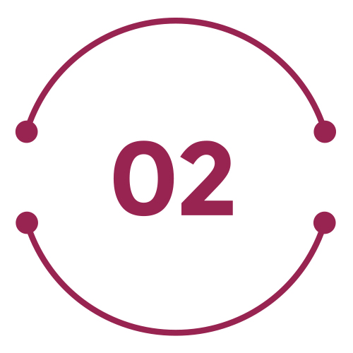
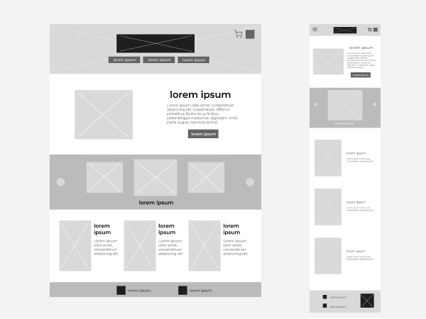

Aplicación móvil dedicada y sitio web adaptable complementario.
Habilidades
Adquiridas mediante estudios, cursos y de forma autodidacta.
Diseño
Estudios realizados en diseño gráfico, graduada como Técnico Superior Universitario. Cursos de diseño de experiencia de usuario visto en coursera y orientado por Google.
Programas
Conocimiento en programas de diseño como Photoshop e Illustrator, además de aprender sobre Figma. Dispuesta a conocer y explorar nuevos programas o herramientas de trabajo.
Dibujo
He adquirido de forma autodidacta habilidades de dibujo tanto digital como tradicional en papel.
Sobre Mí
Resumen De Logros.
Graduación
En 2017 Obtuve mi título universitario en diseño gráfico.
Trabajo
Por varios años he tenido el puesto remoto de diseñador gráfico para una empresa de servicios de Marketing Digital.
Cursos
Con el fin de expandir mis horizontes realice diferentes cursos en el área de diseño de experiencia de usuario e interfaz de usuario.
¡Se parte
de la
Historia!
Currículum
Resumen de mi experiencia
Certificados
Cursos y especializaciones
Ilustraciones
Dibujos en papel y digital.
Contacto
Puedes contactarme por:
Correo electrónico:
gilmarcgm96@gmail.com
APP - TICKETS 1.2.3
Aplicación para vender entradas a conciertos de rock.
Descripción del Proyecto
El Producto:
Tickets 1.2.3 es una aplicación que ofrece a los usuarios la compra de entradas para conciertos de Rock. Dispone de una gama de funciones configurables para no perderse ningún evento. Tickets 1.2.3 busca que los trabajadores o estudiantes que no disponen de tiempo para movilizarse o hacer filas compren directamente entradas.
Duración Del Proyecto:
Abril de 2024 - Agosto de 2024
El problema:
Los trabajadores y los estudiantes no tienen el tiempo requerido para movilizarse y hacer filas para comprar entradas.
El objetivo:
Diseñar una aplicación que permita a los usuarios comprar fácilmente entradas.
Mi rol:
Diseñador de UX a cargo de crear la aplicación Tickets 1.2.3 desde la concepción hasta la entrega.
Responsabilidades:
Realización de entrevistas, esquemas en papel y digitales, creación de prototipos de baja y alta fidelidad, realización de estudios de facilidad de uso, accesibilidad e iteración de diseños.
Entender Al Usuario
Investigación de usuarios: Resumen
Elaboré entrevistas llevadas a cabo para conocer a los usuarios y sus necesidades, a partir de la investigación cree mapas de empatía que me ayudo a entender sus problemas. El grupo de usuarios identificado en la investigación fueron jóvenes y adultos que trabajan o estudian, en algunos casos ambas y no cuentan con tiempo para realizar compras físicamente de boletos. La investigación de usuario dio como resultado la verificación de suposiciones iniciales pero también revelo que el tiempo no es el único factor para usar una compra alternativa, se descubrieron otros factores como evitar el desplazamiento de larga distancia, tener otras obligaciones e intereses y factores como la comodidad y el poder hacer reserva de boletos con antelación.
Investigación de Usuarios: Puntos Débiles
Tiempo
Los adultos y jóvenes que trabajan y estudian están demasiado ocupados para dedicarle tiempo de movilización a otro sitio y hacer filas.

Conectividad
Problemas con el internet o posibles colapso de página requiere una forma precisa y rápida de realizar compras.
Sistema
En las plataformas suele ser difícil realizar pagos y que sean confirmados, realizar varias compras, además de conocer con antelación cuando hay ventas. Requiere un sistema de notificaciones.
Persona: Lucia
Planteamiento del problema:
Lucia es una estudiante y trabaja a medio tiempo que necesita una forma de comprar entradas online de manera fácil y precisa porque no tiene tiempo para hacer fila.
Mapa de recorrido del usuario
Realizar el mapa de recorrido del usuario de Lucia, permite ver lo útil de la aplicación para el usuario, así como posibles oportunidades de mejorar la experiencia en la plataforma.
Comenzar El Diseño
Esquemas de página en papel
Se exploraron diferentes ideas en papel sobre como seria una posible interacción en cada pantalla de la aplicación. De esta forma los elementos finales colocados en los esquemas de página digitales sean los adecuados. En la pantalla de inicio, se priorizo mostrar los próximos conciertos, cercanos a su ubicación y los conciertos en tendencia.
Esquemas de página digitales
Continuando con la fase inicial, los diseños de las pantallas se realizarón teniendo presente los comentarios y los resultados de la investigación de usuarios.
● Barra de búsqueda en la parte superior de la pantalla de inicio permite a los usuarios realizar búsquedas especifica de banda o ciudad.
● Barra de navegación inferior proporciona una vista sencilla para que los usuarios encuentren sus notificaciones, entradas adquiridas o favoritos.
Vista y elección de entradas de manera simple, fue una prioridad clave para los usuarios que se tenia que abordar en los diseños.
● Acceso fácil a imagen con mapa del sitio y sus división por secciones.
● Fácil elección de sección disponible y cantidad de entradas.
Prototipo de baja fidelidad
Los esquemas de página digitales se conectan en un flujo de usuarios primario de buscar y comprar una entrada para un concierto. De esta manera el prototipo se podría usar en un estudio de facilidad de uso con usuarios reales.
Ver el prototipo de baja fidelidad en:
Estudio de usabilidad: Hallazgos
Elabore dos rondas de estudios de facilidad de uso. Los hallazgos del primer estudio ayudarón a guiar los diseños y convertirlos de esquemas de página en maquetas. El segundo estudio empleo un prototipo de alta fidelidad y reveló qué aspectos de las maquetas necesitaban refinarse.
Hallazgos de la ronda 1
Facilitar detalles en la interfaz para el uso de los usuarios.
Mejorar la usabilidad de la aplicación para hacerla aun más accesible y agradable.
Agregar indicaciones en la página de inicio dándole la disponibilidad de incluir sus preferencias.
Hallazgos de la ronda 2
Colocar la información de forma más especifica para cada grupo de entrada elegida.
Mejorar la interfaz que muestra la información de monto de la entradas adquiridas.
Perfeccionamiento del diseño
Maquetas
Al inicio del diseño se planteo una organización de contenido con tamaños iguales y uno más pequeños, después se modifico a una jerarquía donde lo más importante tiene mayor tamaño. También se agrego un botón para dirigir a una pantalla donde ingresar sus preferencias.
Maquetas
El estudio de usabilidad rebeló la necesidad de hacer los procesos de elección más sencillo, por lo que se aplico el uso de “casillas” para la configuración de preferencias.
Maquetas principales
Prototipo de alta fidelidad
El prototipo final de alta fidelidad presentó flujos de usuario más limpios para buscar un evento, pagar entradas y ver las entradas adquiridas. También abarca las necesidades de los usuarios de contar con opciones de notificación, así como de su personalización.
Ver el prototipo de alta fidelidad en:
Consideraciones de accesibilidad
La utilización de colores esta pensada para lograr contraste y sea fácilmente legible.
En la barra de navegación inferior se coloco descripción de cada icono para permitir ser leído por un lector de pantalla.
Se incorporó texto a las imágenes de conciertos para ser descritos por lectores de pantalla, además de ayudar a los usuarios a identificar eventos.
Futuro
Conclusiones
Impacto: La aplicación logra que los usuarios se sientan cómodos y confiados, debido a que realmente piensa en cómo satisfacer sus necesidades de una plataforma de compra online de entradas fiable.
Qué aprendí: Mientras diseñaba la aplicación para comprar entradas, aprendí que las primeras ideas de la aplicación son solo el principio del proceso. Los estudios de facilidad de uso y el feedback de los usuarios influyeron en cada iteración de los diseños de la aplicación.
Próximos pasos
Realizar otra ronda de estudios de facilidad de uso para validar si las soluciones aplicadas a las necesidades de los usuarios se manejaron de forma efectiva.
Realizar más investigaciones de usuarios para identificar nuevas funcionalidades.
¡Pongámonos en contacto!
¡Gracias por tomarte el tiempo de revisar mi trabajo con la aplicación de Tickets 1.2.3!
Si quieres ver más de mi trabajo o comunicarte conmigo, esta es mi información de contacto:
Correo electrónico:
gilmarcgm96@gmail.com
Web - Dolce Sweet
Sitio web responsivo para una repostería.
El producto:
Dolce sweet es una repostería que ofrece opciones en pasteles y otros productos para fiestas. El usuario promedio tiene entre 20-47 años, siendo la mayoría adultos profesionales. Su objetivo es ofrecer una compra fácil y rápida.
Duración del proyecto:
09 de Septiembre 2024 – 02 de Octubre 2024
El problema:
Las páginas web de compra online de pasteles suelen tener productos no actualizados, no disponibles, información incompleta o no especificada.
El objetivo:
Diseñar una página web para Dolce sweet con los productos organizados y proceso de compra sencillo y rápido.
Mi función:
Diseñador UX para el sitio web de Dolce Sweet desde la concepción hasta la entrega.
Responsabilidades:
Realización de entrevistas, wireframing en papel y digital, creación de prototipos de baja y alta fidelidad, realización de estudios de usabilidad, contabilidad de accesibilidad, iteración de diseños y diseño responsivo.
Entender Al Usuario
Investigación de usuarios: Resumen
Realicé una investigación para comprender mejor al usuario sus metas y necesidades. Descubrí que muchos usuarios desean poder comprar pasteles sin complicaciones, por ello suelen ver la información del producto. Sin embargo, se encuentran sitios web donde no hay un orden de productos, además de no especificar sus ingredientes, su disponibilidad, sus políticas de envió, precio. Esto provoca una experiencia confusa y dudosa, frustrando el objetivo de comprar.
Investigación de Usuarios: Puntos Débiles
Navegación
Los diseños de sitios web suele agrupar todos los productos en un solo lugar, no diversifican en categorías dentro de un mismo producto. Haciendo que el usuario tarde en encontrar lo que desea.
Interfaz
La información no se encuentra fácilmente visible o etiquetada, lo que lleva a no poder elegir una opción en el proceso retirándose de este o teniendo que buscar siendo frustrante para el usuario.
Experiencia
Los diseños no suelen ser los más sencillos de navegar llegando a ser tediosos de utilizar.
Persona: Saúl
Planteamiento del problema:
Saúl es un profesor universitario que necesita una navegación intuitiva, con categorías porque quiere buscar y comprar sin frustrarse.
Mapa de recorrido del usuario
Creé un mapa de recorrido del usuario sobre la experiencia de Saúl al usar el sitio para ayudar a identificar posibles puntos débiles y oportunidades de mejora.
Empezar El Diseño
Mapa del sitio
La idea principal para la navegación del sitio web era crear categorías de producto, con eso en mente se creo un mapa del sitio. Mi meta era crear una estructura sencilla para un fácil acceso a la información.
Esquemas de página en papel
Elaboré bocetos de esquemas de página en papel para cada pantalla, teniendo en cuenta los puntos débiles del usuario sobre la navegación. Las variaciones de esquemas en la imágen, se centran la experiencia en la página de inicio.
Esquema de página en papel variación o variaciones del tamaño de pantalla
Debido a que los usuarios acceden al sitio en una variedad de dispositivos diferentes, comencé a trabajar en diseños para tamaños de pantalla adicionales para asegurarme que el sitio respondiera completamente.
Esquemas de página digitales
Pasar de los wireframes en papel a los digitales facilitó la comprensión de cómo el rediseño podría ayudar a abordar los puntos débiles del usuario y mejorar la experiencia del usuario. Se priorizo la ubicación de los botones y elementos visuales como carrusel de imágenes que muestran productos.
● Fácil forma de encontrar categorías
● La página de inicio muestra a través del carrusel de imágenes productos para navegar fácilmente entre algunas opciones.
Esquemas de página digitales variación o variaciones del tamaño de pantalla
Variación de tamaños web escritorio y web móvil.

Prototipo de baja fidelidad
Conecté todas las pantallas que crean un flujo de usuario principal de agregar un producto al carrito y pagar.
Estudio de facilidad de uso: Parámetros
Tipo de estudio:
Estudio de facilidad de uso no moderado.
Ubicación:
Venezuela, remoto.
Duración:
30-45 minutos.
Participantes:
5 participantes.
Estudio de facilidad de uso: Hallazgos
Estos fueron los principales hallazgos arrojados por el estudio de usabilidad:
Compra
En la pantalla de pago, los usuarios no tenia una forma fácil de elegir hora y fecha de envió.
Carrito
No tienen opción de eliminar o editar producto en el carrito.
Cuenta
No tiene una opción para que los usuarios al iniciar sesión en su cuenta puedan completar previamente la información de envió.
Perfeccionamiento del diseño
Maquetas
Según los conocimientos del estudio de usabilidad, realicé cambios para mejorar la experiencia del usuario. Uno de los cambios que hice fue agregar una elección de hora y fecha fácil de usar.
Maquetas
Para dar más libertad de elección modifique el carrito de compra para que el usuario pueda eliminar o editar antes de compra.
Maquetas: Tamaño de pantalla original
Maquetas: Variaciones del tamaño de pantalla
Basadas en esquemas anteriores agregue tamaños de pantallas adicionales en las maquetas. Pensando en que los usuarios compran desde una variedad de dispositivos, es importante optimizar la experiencia de navegación para una variedad de tamaños de dispositivos, como dispositivos móviles y tabletas, para que los usuarios tengan la experiencia más óptima.
Prototipo de alta fidelidad
Mi prototipo de alta fidelidad continua el flujo de usuarios que el prototipo de baja fidelidad con la inclusión de los cambios realizados después del estudio de usabilidad.
Consideraciones de accesibilidad
Empleé encabezados con texto de diferentes tamaños para una jerarquía visual clara.
Coloque puntos de referencia para ayudar a los usuarios a navegar por el sitio, incluidos los usuarios que dependen de tecnologías de asistencia.
Futuro
Conclusiones
Impacto: Los usuarios objetivo describieron la navegación como intuitiva, atractiva con las imágenes de los productos y podían ver una organización de prioridades. En sus palabras: “Es de fácil acceso a la hora de encontrar la lista de los pasteles no le modificaría nada”.
Qué aprendí: Aprendí que se debe tener en cuenta diferentes aspectos por más pequeño que sea puede complicar la experiencia del usuario. Por ello siempre se diseña con las necesidades de los usuarios presentes al momento de proponer soluciones.
Próximos pasos
Realizar una última prueba de usabilidad en la nueva versión del prototipo de alta fidelidad.
Identificar nuevas oportunidades de mejora e idear características extras que se podrían agregar.
¡Pongámonos en contacto!
¡Gracias por revisar mi trabajo en la Web Dolce Sweet! Si desea ver más o desea ponerse en contacto, mi información de contacto se proporciona a continuación:
Correo electrónico: gilmarcgm96@gmail.com
Aquí-Go
Aplicación y Sitio Web Responsivo
Diseño de una herramienta multiplataforma que le permita a las personas encontrar información sobre las diferentes rutas de transporte y la ubicación de paradas en la ciudad.
Resumen del proyecto
El Producto:
Aquí Go es una aplicación creada con el fin de ser una herramienta que ayude a las persona a informarse sobre trayectos de rutas, siendo útil también para gestionar sus horarios. Los usuarios incluyen desde estudiantes a adultos, pensando en la variedad de dispositivos se creo un sitio web adaptable complementario.
Duración Del Proyecto:
Fecha Inicio 07/10/24 - Fecha Culminación 06/11/24
El problema:
Se ha identificado la falta de información sobre trayectos de rutas y sus horarios, esta falta de conocimiento genera confusión en algunas personas resultando en perdidas si no conoces la ciudad.
El objetivo:
Diseñar una aplicación ayudara a la disponibilidad de información y a su vez beneficiará a las personas en la gestión de sus horarios de salidas.
Mi función:
Diseñador UX para la aplicación y diseño responsivo de sitio web desde la concepción hasta la entrega.
Responsabilidades:
Investigación de usuarios, wireframing en papel y digitales, creación de prototipos de baja y alta fidelidad, realizar estudios de usabilidad, iterar sobre diseños, determinar arquitectura de la información y diseño responsivo.
Entender Al Usuario
Investigación sobre los usuarios: resumen
Al realizar una investigación encontré que la mayoría de usuarios que usan aplicaciones para informarse sobre transporte urbano buscan información actualizada y acertada, se sienten disgustados con una interfaz muy complicada, información errónea o diferencia horaria. El conocimiento recibido a través de la investigación dejó entendido que los usuarios están abiertos a usar aplicaciones como una herramienta fácil de usar para mantenerse informados.
Persona 1: Rodrigo
Planteamiento del problema:
Rodrigo es un estudiante que necesita un medio donde ver información de transporte público porque necesita conocer los horarios y rutas de la nueva cuidad donde vive.
Persona 2: Matilde
Planteamiento del problema:
Matilde es una profesional que necesita una forma de ver horarios y alertas del transporte público porque desea estar informada para organizar sus salidas diarias.
Auditoría competitiva
Una auditoría de algunos competidores de productos que proporcionan dirección de oportunidades para abordar con la Aplicación de información de transporte público.
Una auditoría de algunos competidores de productos que proporcionan dirección de oportunidades para abordar con la Aplicación de información de transporte público.
Ideación
Realice bocetos para desarrollar ideas, mi objetivo principal es buscar una forma de mostrar información y un seguimiento en pasos de una ruta elegida.
Comenzar El Diseño
Esquemas de página digitales
Después de idear y realizar algunos wireframes en papel, procedí a realizar los diseños iniciales para la aplicación aquí go. Los diseños se centraron en la búsqueda y presentación de la información.
● Priorización de búsqueda.
● Fácil acceso a características de la aplicación en una barra inferior.
Prototipo de baja fidelidad
Para realizar las pruebas de usabilidad, cree un prototipo de baja fidelidad donde se conectaba el flujo de usuarios desde ingresan datos para ver información de transporte hasta una muestra paso a paso de como llegar.
Ver el prototipo de baja fidelidad en:
Estudio de usabilidad: parámetros
Tipo de estudio:
Estudio de usabilidad no moderado.
Ubicación:
Venezuela (remoto).
Duración:
30-45 minutos.
Participantes:
5 participantes.
Estudio de usabilidad: hallazgos
Estos son los principales hallazgos encontrados durante el estudio de usabilidad:
Información
Las personas desean poder tener acceso a una lista de rutas disponible sin tener que colocar una dirección.
Alertas
Las personas quieren poner tener alertas para transportes elegidos.
Datos móviles
Los usuarios preferirían usar pocos datos móviles al usar la aplicación.
Perfeccionamiento del diseño
Maquetas
Basado en los hallazgos del estudios de usabilidad, se realizaron cambios aplicados en la creación de pantallas proporcionando una selección clara desde la pantalla de inicio con un botón de navegación que dirige a lista de información de transportes.
Maquetas
Los cambios de diseño adicionales incluyeron agregar un botón para "Guardar" a la página y proporciona así una forma de descargar la opción indicada permitiendo a su vez poder verla más adelante sin datos móviles.
Maquetas
Prototipo de alta fidelidad
El prototipo de alta fidelidad siguió el mismo flujo de usuarios que el prototipo de baja fidelidad, incluidos los cambios de diseño realizados tras el estudio de usabilidad, además de la creación de pantallas extras que acerquen más el producto a su versión real.
Consideraciones de accesibilidad
El enfoque principal de la pantalla de inicio es una búsqueda personalizada, esto ayuda a definir la tarea principal o acción para el usuario.
Descripción de botones claras para una interacción de elementos que se pueden leer con lectores de pantalla.
Diseño adaptable
Mapa del sitio
Una vez completados los diseños de la aplicación, comencé a trabajar en el diseño del sitio web responsivo. Utilicé el mapa del sitio de Aquí Go para guiar la estructura organizativa del diseño de cada pantalla para garantizar una experiencia coherente en todos los dispositivos.
Diseños adaptables
Los diseños para la variación del tamaño de pantalla incluyeron dispositivos móviles, tabletas y computadoras de escritorio. Optimicé los diseños para adaptarlos a las necesidades específicas del usuario en cada dispositivo y tamaño de pantalla.
Futuro
Conclusiones
Impacto: Los usuarios comunicaron que la aplicación podría ser a futuro una gran herramienta de información y también seria útil para organizar sus días.
Qué aprendí: Aprendí como seguir con diligencia cada paso del proceso de diseño y alinearme con las necesidades específicas del usuario ayuda a encontrar soluciones que son factibles y útiles para resolver el problema.
Próximos pasos
Realizar una investigación sobre el éxito de la aplicación al momento de alcanzar el objetivo principal de brindar información acerca del transporte público.
Pensar en posibles funciones para expandir más la utilidad de la aplicación.
Probar la función de seleccionar por calendario días específicos para alarmas o notificaciones.
¡Pongámonos en contacto!
¡Gracias por tomarte el tiempo de revisar mi trabajo con la aplicación y página web adaptativa de Aquí Go!
Si quieres ver más de mi trabajo o comunicarte conmigo, esta es mi información de contacto:
Correo electrónico:
gilmarcgm96@gmail.com
Currículum
Correo:
gilmarcgm96@gmail.com
Certificados
Cursos realizados
Curso:
Diseño de UX
Instruido por:
Google
Curso:
Introducción al diseño de interfaz de usuario
Autorizado por:
Universidad de Minnesota y ofrecido a través de Coursera.


 El producto:
Dolce sweet es una repostería que ofrece opciones en pasteles y otros productos para fiestas. El usuario promedio tiene entre 20-47 años, siendo la mayoría adultos profesionales. Su objetivo es ofrecer una compra fácil y rápida.
El producto:
Dolce sweet es una repostería que ofrece opciones en pasteles y otros productos para fiestas. El usuario promedio tiene entre 20-47 años, siendo la mayoría adultos profesionales. Su objetivo es ofrecer una compra fácil y rápida.